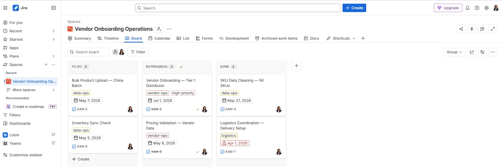
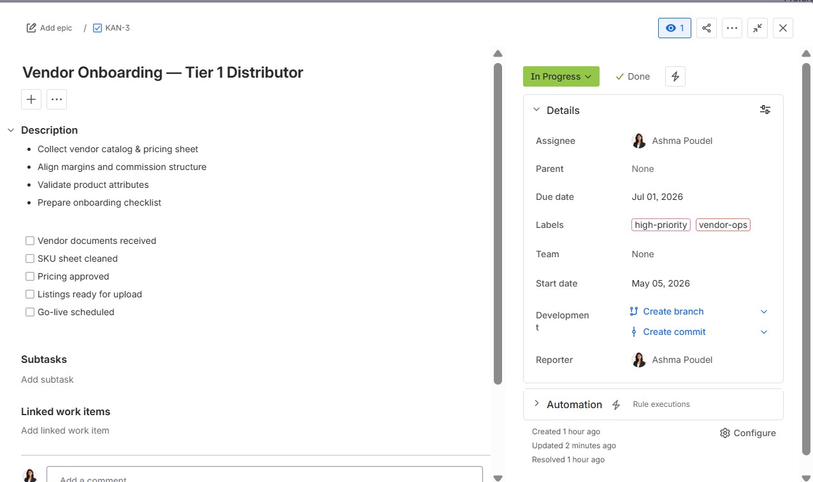

Project 1: Data Analytics & Product Growth
This project explores user retention and growth dynamics within a freemium business model. Using SQL and Tableau, I identified key habit-formation metrics that drive long-term engagement.
🐶 Personality Dimension vs Test Completion

Engagement remains consistent across personality types, indicating that product experience—not inherent traits—drives user activity.
🐕 Breed Type vs Test Completion

Breed type has minimal impact on engagement, suggesting broad product-market fit across user segments.
Project 2: Operational E-commerce & Workflow
Focused on vendor onboarding and workflow optimization. Managed via Jira for task tracking and Notion for full operational documentation.
Jira Kanban Board (Workflow Overview)

Jira Task Detail (Vendor Onboarding Ticket)

Detailed Project Documentation
View the full operational manual and vendor requirements on Notion.
View Case Study on Notion →